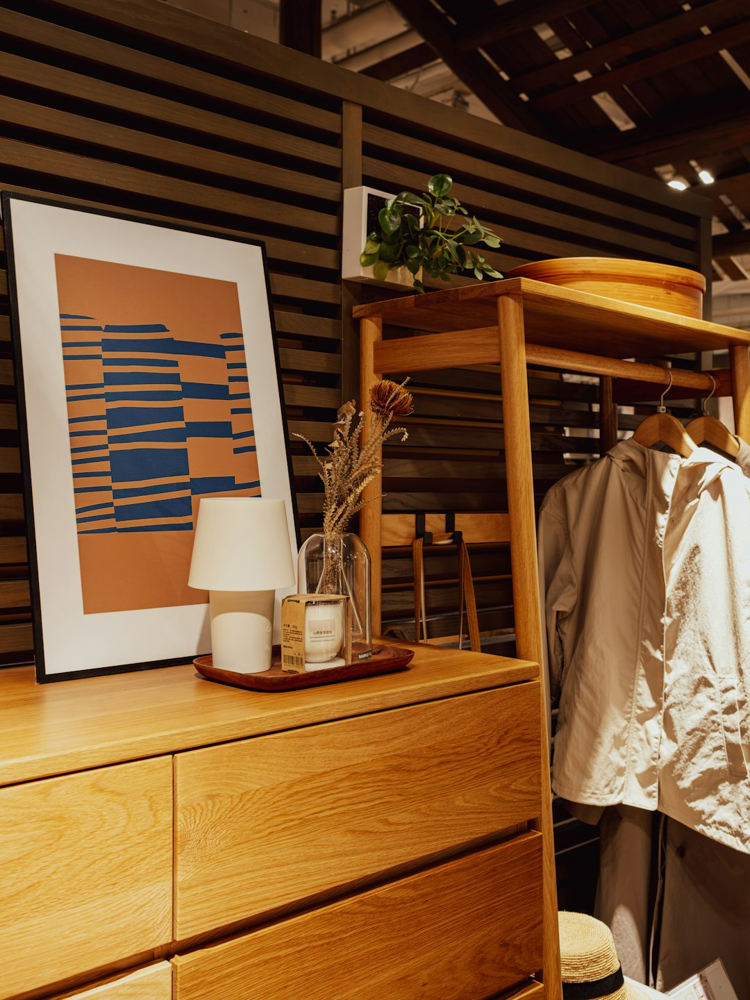
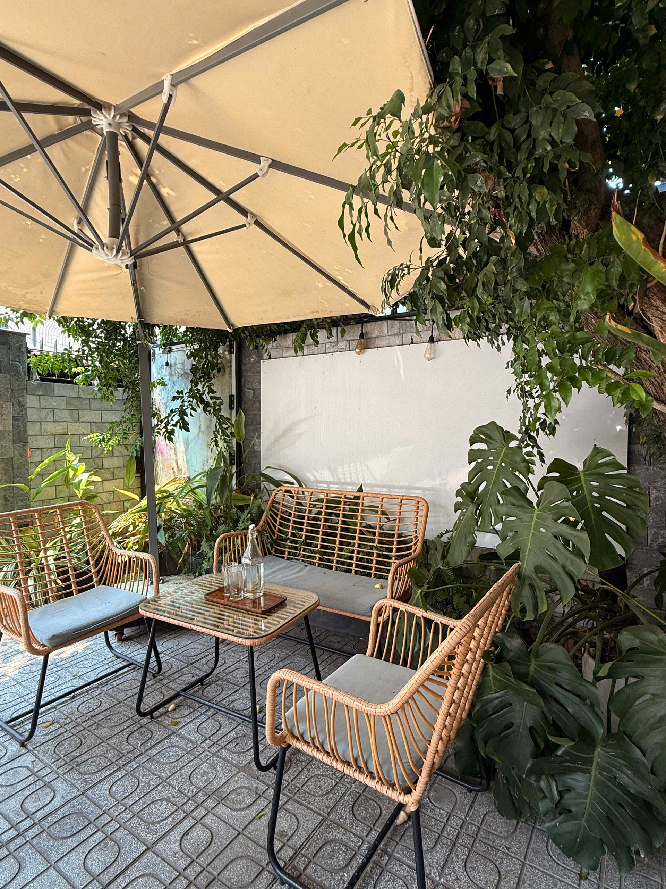
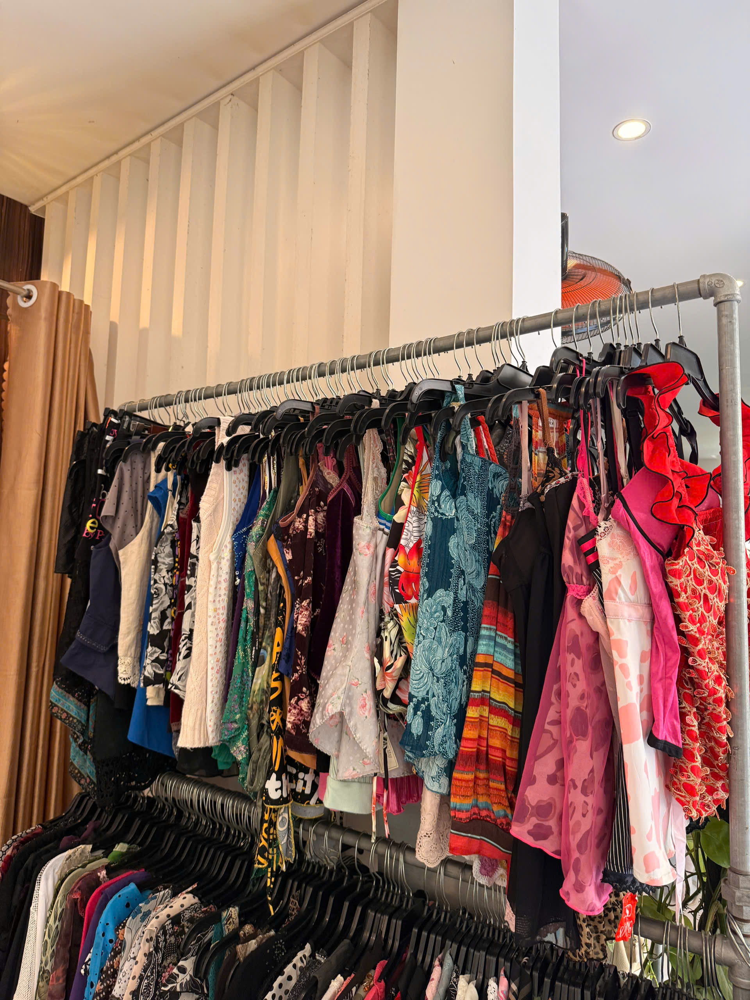
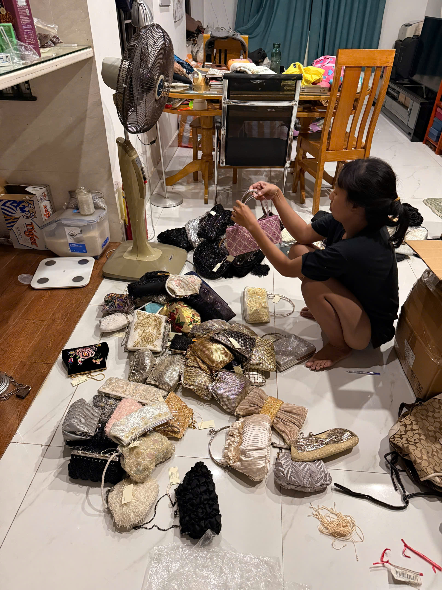

Ivory lace top
Size / Fit S–M
Condition Very good
Why it made the cut Soft lace, easy layer, clean shape.
Ask about this piece
YEN MAY VINTAGE
Curated Y2K & vintage pieces for people who care about shape, fabric, condition, and personal style.
Open daily 10:00–21:00 in Da Nang. Browse the edit, then come by and try pieces on in person.
NEW FINDS
Each item is chosen for its shape, fabric, condition, or rare detail.
Size / Fit S–M
Condition Very good
Why it made the cut Soft lace, easy layer, clean shape.
Ask about this pieceSize / Fit Compact
Condition Good
Why it made the cut Simple shape, daily size, quiet detail.
Ask about this piece
Size / Fit XS–S
Condition Good
Why it made the cut Strong Y2K shape, easy styling.
Ask about this piece
Size / Fit M
Condition Very good
Why it made the cut Fluid drape, soft shine, wearable color.
Ask about this pieceWHY SHOP HERE
CUSTOMER WALL
Customer photos, try-ons, and small proof that Yen May is worth the stop.


THE EDIT





WHAT PEOPLE SAY
★★★★★Found a bag and lace top I actually wear. The shop feels calm and easy to browse.
Mia Tran
★★★★★Small shop, good taste, no pressure. Pieces feel selected, not random.
Jules Martin
★★★★★Loved the mirror corner and the way every item had a reason to be there.
Sofia Lee
★★★★★Asked about sizing before visiting. Came in, tried it on, took it home.
An Pham

VISIT THE SHOP
Come by to browse slowly, try pieces on, and see the edit in person. Open daily in Da Nang.
Get directions and visitON INSTAGRAM
Follow for fresh finds, try-ons, and pieces that may not stay long on the rack.
Browse the latest edit
